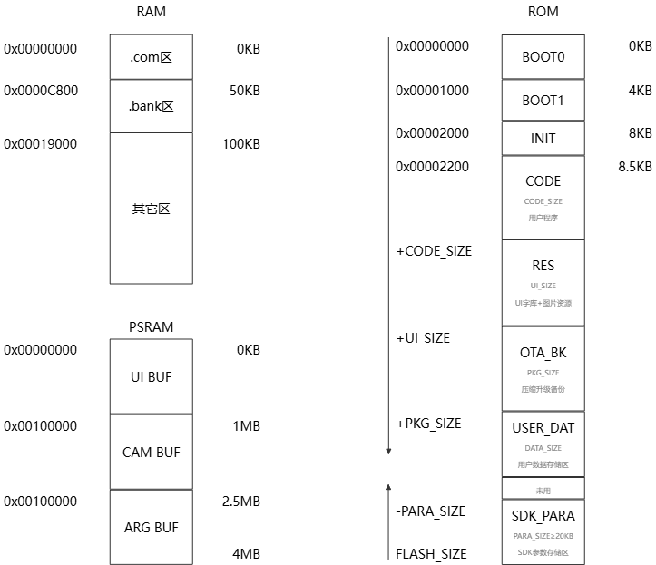

芯片架构与存储
X1 将 CPU、NPU、2.5D GPU、片上存储、无线连接和常用外设集成在同一平台中。 应用代码通过 AHB/APB 总线访问外设，图形、音频、视觉和通信任务可按负载拆分到对应硬件单元。
架构要点
32 位 RISC-V CPU，最高 180 MHz，配套中断控制器和 288 KB Cache SRAM。
NPU/DSP 工作频率最高 180 MHz，面向本地推理和信号处理。
2.5D GPU 支持旋转、缩放、混合、模糊和矩阵变换，并集成 JPEG/GIF 编解码能力。
可选片内 PSRAM/NOR Flash，外部存储可通过 QSPI 或 SDIO 扩展。

存储分区

需要擦除的 Flash 区域必须按 4 KB 边界规划起始地址和长度。链接脚本将代码划分为
.com 与 .bank 两类执行区域，两者的实时性和容量不同：
区域 |
执行方式 |
适用场景 |
|---|---|---|
|
启动时从 ROM 拷贝到常驻 RAM，容量较小、访问延迟稳定 |
中断服务、显示扫描、关键总线时序等高实时性路径 |
|
按需从 ROM 动态装载到 Bank RAM，容量较大但存在装载开销 |
普通业务逻辑、低频控制流和非实时功能 |
放置实时函数
通过 AT 属性把中断或关键函数放入 .com_text。段名应保持唯一且能表达模块归属：
AT(.com_text.app_timer)
void app_timer_isr(void)
{
gui_scan();
}
未显式声明 AT 的函数默认进入 Bank 区。调整放置策略后，应检查链接映射文件，确认
.com 总量没有超过目标芯片的 RAM 预算。
中断中的字符串
字符串常量默认也可能位于 Bank 区。中断路径必须打印时，应将格式串一并放入常驻区； 更推荐把数据写入无锁缓冲区，由普通任务异步输出，减少中断占用时间。
AT(.com_text.app_timer_str)
static const char timer_value_fmt[] = "timer value = %u\n";
AT(.com_text.app_timer)
void app_timer_isr(void)
{
printf(timer_value_fmt, timer_value);
}
警告
printf 本身可能引入锁、格式化和串口等待。量产代码不要在高频中断中直接打印，
示例仅用于说明代码和常量需要处于相同的可执行存储域。